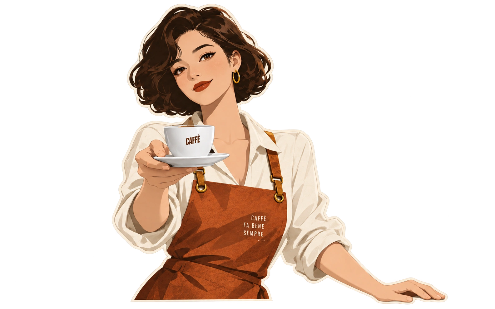
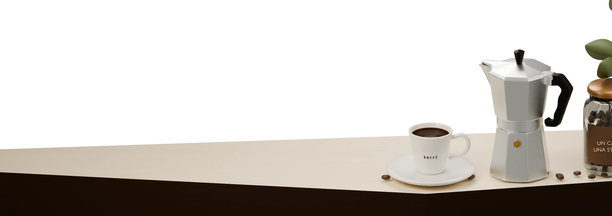

PICCOLIRITUALIGRANDIGIORNI
OFFICINA DEL CAFFÈ

Good Coffee.Brighter Days.

SCEGLI IL TUO METODO
咖啡工作室 / 随你发挥
挑一张来单，或从一把壶开始。
拖动杯子，安排你这一期的主角。
GAZZETTA DEL CAFFÈ / 本期报道
海报构图
这一期的色彩
复现链接用于本机预览。图片可直接分享。